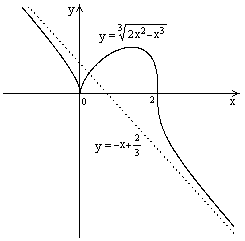

П 19ТУ №19
Исследуйте функцию и
постройте её график.
Функция определена при всех  . Для нахождения точек пересечения с
осями записываем уравнения
. Для нахождения точек пересечения с
осями записываем уравнения  и ; получаем, что ось
и ; получаем, что ось  пересекается в точке с , а ось
пересекается в точке с , а ось  -
в точках
-
в точках  и
и  .
.
. Для нахождения точек пересечения с
осями записываем уравнения и ; получаем, что ось пересекается в точке с , а ось -
в точках и .Точек разрыва нет. Так как нет точек разрыва
2-го рода, вертикальные асимптоты отсутствуют. Ищем параметры наклонных асимптот.
,
При вычислении второго предела использовано
правило Лопиталя для раскрытия неопределённости типа .
Итак, у графика есть наклонная асимптота; её
уравнение
Находим производную: .
Знак производной определяется знаком выражения или .
Видим, что в области 
 ,
при
,
при  и при .
и при .
,
при и при . Получаем, что в области функция убывает, при - возрастает и при - убывает.
функция убывает, при - возрастает и при - убывает.Находим критические точки.  при ,
при ,
 не существует при ,.
не существует при ,.
при ,
не существует при ,.При переходе через знак
производной меняется с (-) на (+), т.е. это точка минимума.
знак
производной меняется с (-) на (+), т.е. это точка минимума. При производная
не существует, значит, минимум острый.
производная
не существует, значит, минимум острый. При переходе через вторую критическую точку производная меняет знак с (+) на (-)
, т.е. при - максимум: .
При переходе через знак
производной не меняется, значит экстремума нет.
знак
производной не меняется, значит экстремума нет. Находим вторую производную: .
Видим, что  при
; в этой области график выпуклый; при
при
; в этой области график выпуклый; при  ,
т.е. интервал также является областью
выпуклости. При
,
т.е. интервал также является областью
выпуклости. При  , следовательно, при график вогнут.
, следовательно, при график вогнут.
при
; в этой области график выпуклый; при ,
т.е. интервал также является областью
выпуклости. При , следовательно, при график вогнут.Найдём точки перегиба.
Вторая производная не существует при и при.
При переходе через первую точку знак  не
меняется, а при переходе через вторую – меняется. Итак, точкой перегиба
является точка с координатами , .
не
меняется, а при переходе через вторую – меняется. Итак, точкой перегиба
является точка с координатами , .
и при.
При переходе через первую точку знак не
меняется, а при переходе через вторую – меняется. Итак, точкой перегиба
является точка с координатами , .|
|
|
0
|
2
|
||||
|
|
-
|
 |
+
|
0
|
-
|
|
-
|
|
|
-
|
|
-
|
-
|
-
|
|
|
 |
 |
острый минимум
|
|
максимум
|
|
нет экстремума
|
 |
График имеет вид:
